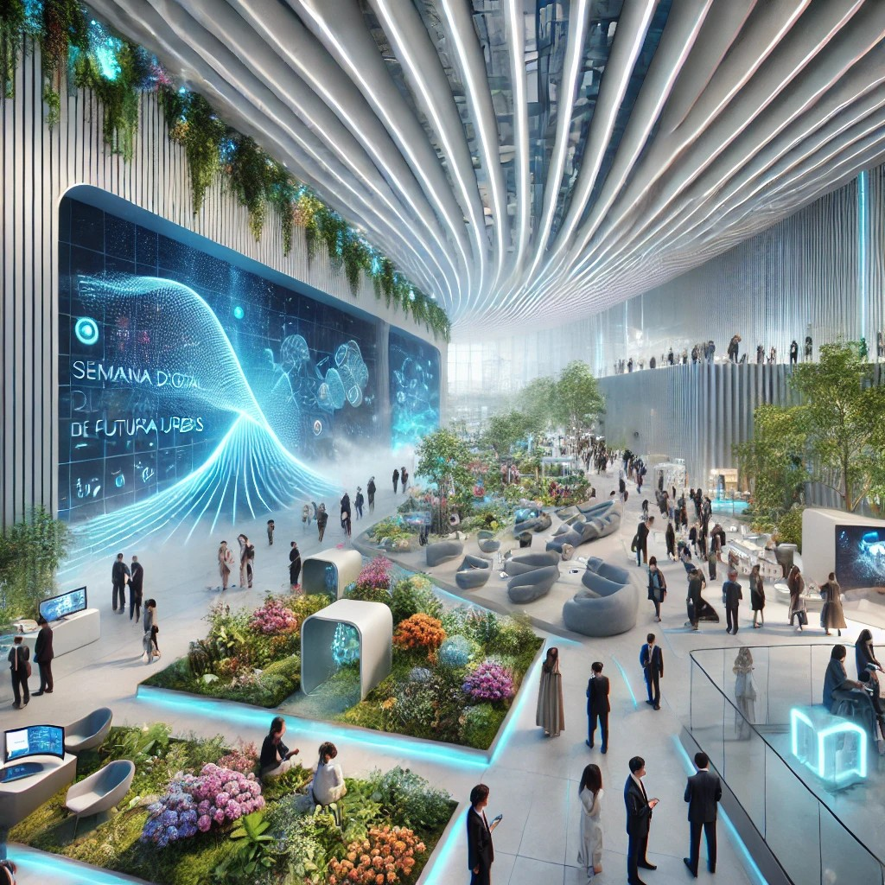

Futura Urbis: Sede del Congreso de la Semana Digital e Innovación
¡Bienvenidos a la Semana Digital de Futura Urbis! Esta es nuestra oportunidad para aprender, crear y compartir juntos en un mundo donde la tecnología tiene un impacto cada vez mayor en nuestras vidas. Durante esta semana, exploraremos temas esenciales como la ciberseguridad, el uso responsable del móvil y la inclusión digital, con un enfoque en construir una comunidad más conectada y segura.

Cada uno de nosotros jugará un papel clave, no solo aprendiendo, sino también enseñando y guiando a otros en este camino digital. Desde jóvenes hasta mayores, todos tendremos la oportunidad de participar y contribuir al futuro de Futura Urbis, una ciudad donde la tecnología se convierte en una herramienta para unirnos y crecer.
¡Este es el momento de actuar y hacer la diferencia! ¡Que comience la semana digital!
Encabezado 2
Escriba su contenido...